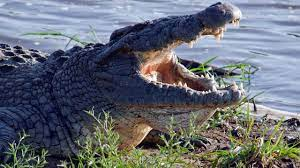

Kısaca: Timsah, sıcak bölgelerde bataklıklar ve su kenarlarında yaşayan vücudu kemiksi pullarla örtülü sürüngenleri içeren bir takım. Bu takımın familyaları Alligatoridae, Crocodylidae ve Gavialidae'dir.Timsah, sıcak bölgelerdeki akarsularda yaşayan, Timsahgiller ailesinden iri yapılı, kalın ve kabuksu derili sürüngen türlerinin genel adı. Uzaktan bakıldığında kertenkeleye benzerler. Vücutlarının üzeri, sert kemiksi plakalarla örtülüdür. Ön ayaklarında beşer, arka ayaklarında dörder parmak bulunur. Parmak araları tamamen veya kısmen perdelidir. Uzun, yandan basık kuyrukları suda kürek vazifesi görür. Güçlü dişlerle bezenmiş, çok kuvvetli çeneleri vardır. Yalnız üst çene açılır. Etli dil, alt damağa yapışıktır. Gözleri, burunları ve kulakları başlarının üst kısmında bulunur. Suda yüzerken rahatça etraflarını görür, işitir ve solunum yaparlar. Karada vücutlarını zor taşımalarına rağmen, suda çok iyi yüzerler. Gündüzleri dinlenir, çoğunlukla gece avlanırlar. Gözbebekleri dikey olduğundan gece de iyi görürler. Balık, kuş ve suya gelen memelilerle beslenirler. İnsanlara da saldıranları vardır. Avlarını güçlü çeneleri arasına sıkıştırıp suya çekerek boğarlar. Dişlerini avlarını parçalamada kullanırlar. Çiğnemeden parçalar halinde yutarlar. Sindirim için çakıl ve taş da yutarlar. Sonra dişlerinin arasındaki artıkları dışarı çıkarırlar. Taze etin sindirimi zor olduğu için bazı türler avlarını gömerek çürümelerini bekler.
Gözleri üç perdelidir. Suya daldıkları zaman burun ve kulak delikleri birer kapakla örtülür. Ağız gerisinde bulunan bir kıvrımı damaklarına yapıştırarak soluk ve yemek borularını birbirinden ayırabildiklerinden su altında bile ısırıp yiyebilirler. Konik yapılı dişler aşındıkça yenileri sürer. Derilerinden bavul, çanta iskarpin yapılır. Bu bakımdan bol miktarda avlanırlar. Yürekleri dört gözlüdür. Aort kökleri Panizza kanalı vasıtasıyla birleştiklerinden vücutlarında kirli kan dolaşır. Diğer sürüngenler gibi soğukkanlı hayvanlardır. Vücut ısıları çevre ısısına göre değişir. Yumurtayla çoğalırlar. Çiftleşmeden sonra dişi, kıyıdaki bir kumlukta açtığı çukur içine kaz yumurtası iriliğinde 50 kadar yumurta yumurtlar. Yumurtaların üzerini kumla örterek yakınlarında nöbet bekler. Bazan bu süre üç ayı bulur. Dişi bu sürede hiçbir şey yemediğinden kilo kaybeder. Zaman zaman erkek de dişinin yakınına gelir. Ama dişisini beslemeyi akıl edemez. Yavrular, yumurta kabuğunu kırmaya hazır olunca 20 metre kadar uzaklıktan duyulan sesler çıkararak annelerini yardıma çağırırlar. Dişi, kumları açarak yumurtalardan yavruların çıkmasına yardım eder. İnce derili yavrular büyük bir titizlikle tek tek annenin ağzında su kıyısına taşınır. Bakıma muhtaç yavrular altı ile sekiz haftalık bir süre içinde anne ve baba tarafından dış tehlikelerden büyük bir dikkatle korunur. Yırtıcı kuşlar ve vahşi memeliler timsah yavrularına düşkündür. Yavrular kendilerine bakacak duruma gelince anne ve babalarından uzaklaşarak kendilerine av sahaları ararlar. Büyük timsahlardan uzak olmak zorundadırlar. Hatta bazan sonraki karşılaşmalarda anne ve babalar yavrularını tanıyamamakta, onlara av gözüyle bakmaktadır. Yavrular, balık yumurtaları, salyangoz ve su böcekleriyle beslenirler.
